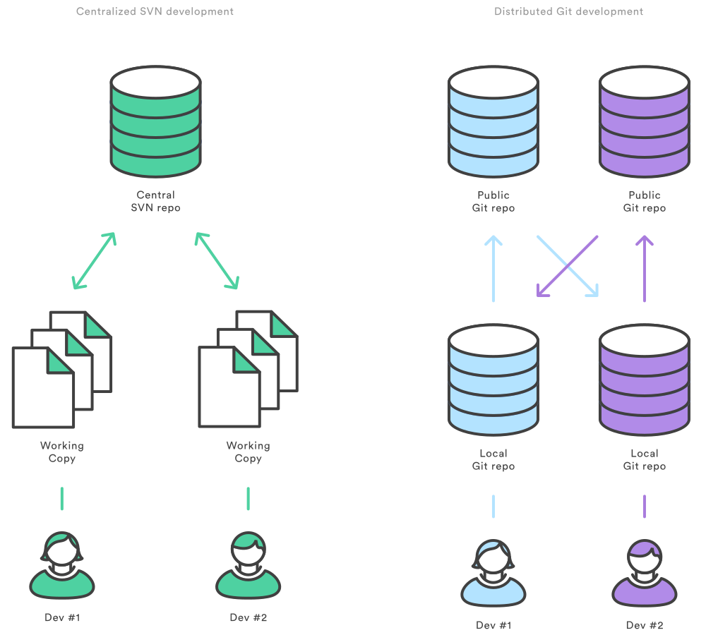
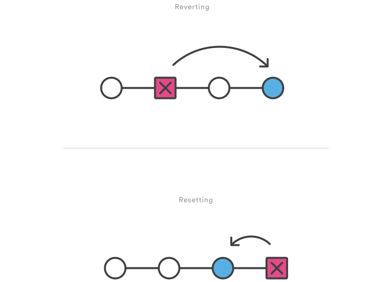

제대로 써보기
이해와 활용
이종은
ver.201412
이종은
Yo Studio
이종은
Titanium Developer


인사 나눠요 ^^
목차
맛보기
Commit
Branch
협업하기
질문은
언제
어디서나
There are no stupid question.
본 강좌의 반쪽은
여러분의 질문으로 완성됩니다.
REAL 후기
- 어떠한 질문이든 다 받아주시던 점이 좋았습니다.- 질문에 대한 답변을 상세히 해주어서 좋았습니다.
- 질의에 열정적으로 응답하는 모습이 좋았습니다.
git의 탄생
파일과 함께 하는 업무
긴급 상황 발생
Q. 대비책이 있나요?

우리는 누구?
인간은 OO을 사용하는 동물
파일 관리 도구들

왜 사용하나요?
- 무언가 잘못되었을 때 복구를 돕기 위해
- 프로젝트 진행 중 과거의 어떤 시점으로 돌아갈 수 있게 하기 위해
- 여러사람이 작업할 때 쉽게 합치기 위해
- 누가 어떤 부분을 수정했는지 추적하기 위해
- 안전하고 자유롭게 작업하기 위해
git-scm.com
SCM?
Source Code Management
Source Code?
네! 개발자를 위한 도구입니다.
리누스 토발즈

git 맛보기
잠깐! 혹시?
git 그리고 github
==
앞으로 쏟아질 용어들
- Remote Repository, Local Repository
- Staging Area, Index, Working Directory, Sanpshot,
- Commit, Checkout, Reset, Merge,
- HEAD, Branch, Tag,
- Pull, Push, Fork
오늘 이것만은 제대 알고 가자!
1. Commit
2. Branch
왜 좋은가?
- 빠르다
- 안전하다
- 자유롭다
빠르고 안전하고 자유로운 이유 1.
거의 모든 동작은
내 컴퓨터(Local)에서 동작한다.
빠르고 안전하고 자유로운 이유 2.
분산버전 관리 시스템
빠르고 안전하고 자유로운 이유 3.
은 당신이 한 거의 모든 일을
알고 있다.
Git 주요 개념 맛보기
Git 설치 및 사용
- Git
git-scm.com - Source Tree (GUI Tool)
sourcetreeapp.com - Sublime Text(Text Editor)
sublimetext.com/2
준비운동
Git으로 기록하기
저장소 만들기
git init
.git 폴더
.git 폴더
일단 파일 만들고 커밋해보자
git add first.txt
git commit -m "first commit"
Commit은
Snapshot을 저장하는 행위다.
add는 Stage 위로 올리는 것
Stage는
Commit하기 위해 준비하는Snapshot이다.
기록 절차

git add first.txt
git commit -m "first commit"git commit -a -m "first commit"
Commit
무엇이 생기고 어떤게 기록되나?
- Blob : 파일 내용
- Tree object : 폴더구조 (파일명, 하위폴더명)
(파일 내용은 포함하지 않고 Blob의 Hash만 저장) - Commit object : 최상위 폴더의 Tree hash와 Commit 부가정보 저장

현재 상태 및 기록 살펴보기
git status
git log
git log -p
git reflog
파일 상태의 변화
- Untracked
- Staged
- Unmodified
- Modified
(Keynote 추가 설명)
Git으로 가지치기(Branch)
Q. 원래 코드와 상관없이 개발을 진행하고 싶을 때 어떻게?
- A. 프로젝트 폴더를 통째로 복사한다? (ex.myproject_원본)
이제 수동작업은 그만!
빠르고 값싼 Branch는 Git 최고의 장점
Branch의 실체 공개!
- 파일 1개로 구성
- 파일명 == Branch 명
- 내용 : 가리키는 커밋의 Hash
- 용량 : 41 Byte
단순 포인터! 겁나 싸죠?
Branch 명령어 사용법
git branch
git branch <branch>
Checkout 명령어를
이용한 Branch 다루기
git checkout -b <branch>
git checkout <branch>
Branch와 비슷하지만 다른 것
- tag : 특정 위치를 나타내는 포인트(commit을 가리킴)
- HEAD : 현재 위치를 나타내는 포인트(branch나 commit을 가리킴)
성격 정리..
- tag : 고정
- branch : 반고정
- HEAD : 고정 아님
Merge
이용한 Branch 다루기
git merge <branch>
git merge --no-ff <branch>
Merge의 종류 1.
Fast-Forward Merge

Merge의 종류 2.
3-way merge
Git으로 되돌리기
방법 1. Checkout
전체 혹은 특정파일을 특정 커밋의 상태로 되돌린다.
git checkout <commit>
git checkout <commit> <file>
방법 2. Revert
특정 Commit을 되돌리는(Undo)하는 Commit을 생성한다.
git revert <commit>
Checkout
Commit 전 변경사항은 Checkout!
커밋을 만들지 않고 Working Directory의 일부 혹은 전체 내용이 바뀜
Revert
Commit 후 커밋 내용을 통째로 되돌릴때는 Revert!
되돌리는 내용을 담은 커밋을 발생시킨다.
방법 3. Reset
이용에 주의해야 함. 위험한(?) 명령어
File을 Reset하는 것은 Unstaged 상태로 만드는 것
Commit Reset은 현재 Branch를 해당 Commit으로 이동하는 것
git reset <file>
git reset <commit>
Revert vs. Reset
Checkout vs. Reset
Checkout <commit>
HEAD만 다른 곳으로 이동할뿐
Reset <commit>
Branch와 Head가 다른 곳으로 이동! Branch의 기록을 뒤바꾸는 일.
기타 유용한 명령어
git clean -fclean: Untracked File을 지움, .gitignore에 명시된 파일은 안지움
git commit --ammend -m "You can change commit message"ammend: 방금 전 commit을 다시 하는 간단한 방법
git stashstash: Commit 되지 않은 변경사항을 따로 저장해두고 다음에 적용할 때
Git 원격 저장소
Local? Remote?

그 특별한 remote 이름
origin
Branch에서 master의 역할과 같이 기본(기준)이 되는 것
Remote를 통한 협업 과정
(그림을 그려가며..)
Remote 관련 명령어
git remote
git remote -v
git remote add <name> <url>
git remote rm <name>
git remote rename <old-name> <new-name>
Github Rmote Push 데모
git init
git add README.md
git commit -m "first commit"
git remote add origin git@github.com:yomybaby/test.git
git push -u origin mastergit remote add origin git@github.com:yomybaby/test.git
git push -u origin master
Fetch vs. Pull
Remote에 있는 내용를 전부 가져오는 행위는 동일
Local branch랑 합치면 Pull (내 작업 Working Directory에 영향)
다른 사람이 이미 remote를 만든 경우
Clone 해보자
Remote Repository를 내 local에다가 그대로 옮김
git clone <repo>
git clone <repo> <directory>
이제 협업할 준비가 되었다!
어떤 정책으로 협업 할 것인가?
Git Workflow
Workflow = Branching 정책(전략)
다양한 정책들..
- Centralized Workflow
- Feature Branch Workflow
- Gitflow Workflow
- Forking Workflow
Branch 하나만 쓸께요.
Centralized Workflow

개발 단위(기능) 별로 branch 만들께요.
Feature Branch Workflow

개발 단위(기능) 별로 branch 만들께요.
Feature Branch Workflow

Feature Branch Workflow. 심플하고 자유롭다.
너무 자유로워서 관리의 어려움

개발서버(develop), 실서버(master) 구분할께요.
Gitflow Workflow

개발서버(develop), 실서버(master) 구분할께요.
Gitflow Workflow
매번 git branch, checkout, merger,
branch 삭제 등을 해야한다고요?
네, 하지만 우리는 도구를 사용하는 동물!
Gitflow 시연
Remote Repository도 각각 따로 둘께요. 공식 Repository는 관리자만!
Forking Workflow

개발자1 관리자 개발자2
개발자1, 개발자2가 완료했다는 것을 관리자에게 어떻게 말해주지?
Pull Request
내 Repository의 이 Branch를
공식 Repository의 그 Branch에 Pull해주세요.

Pull Request 시연
Workflow를 위한 저장소 관리
- Github
- Bitbucket
- Stash
- Gitlab
- Gitolite
- Gitorious
- tortoisegit
- ..
가장 중요한 것은!
Commit과 Branch의 이해!
미처 다루지 못한 내용 : rebase, hook, .bash_profile ..